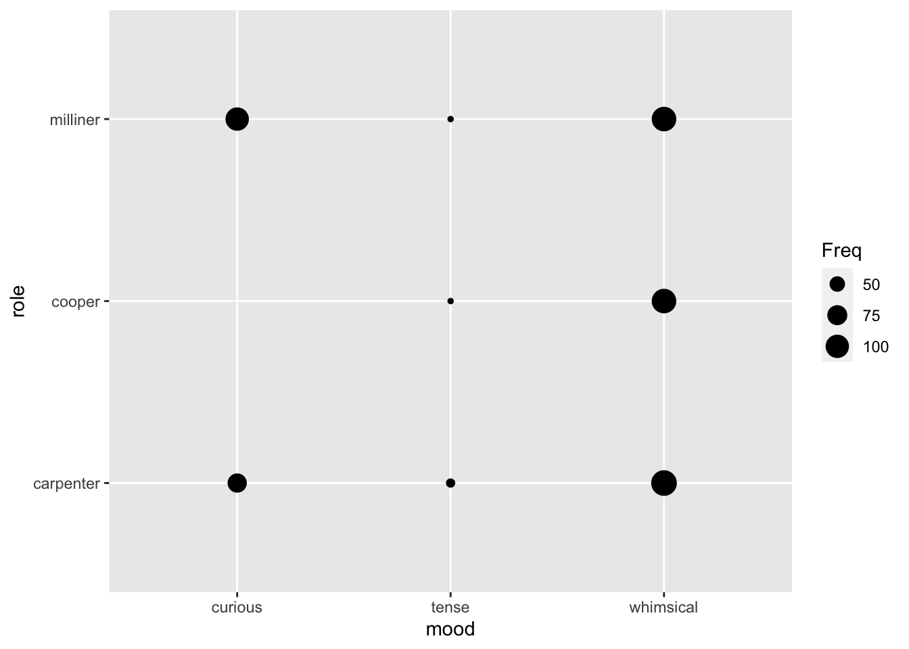
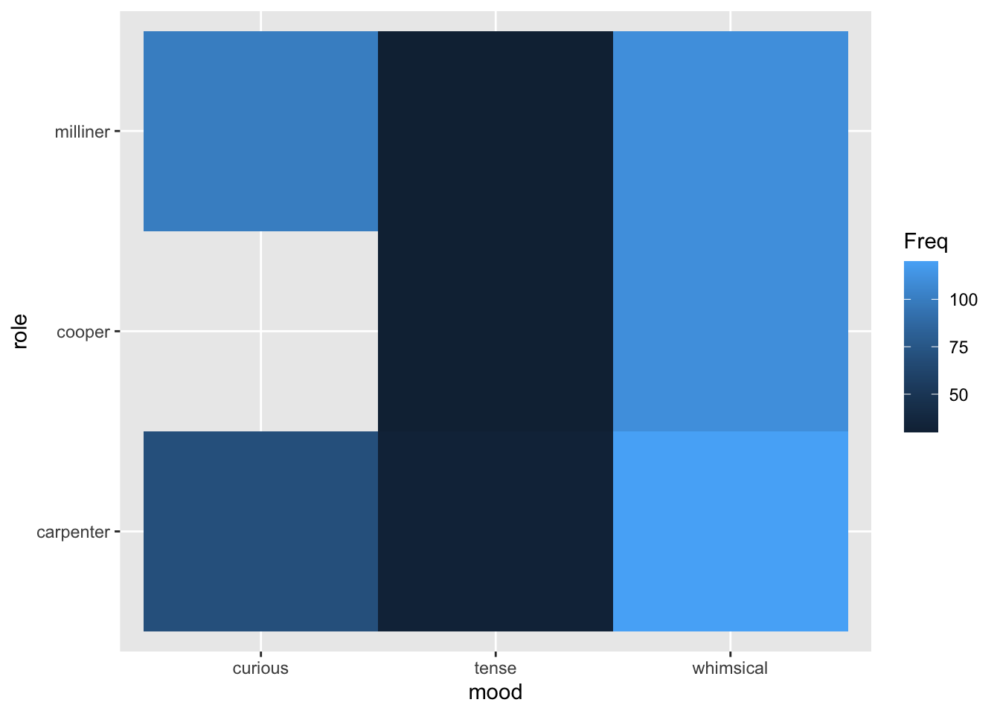
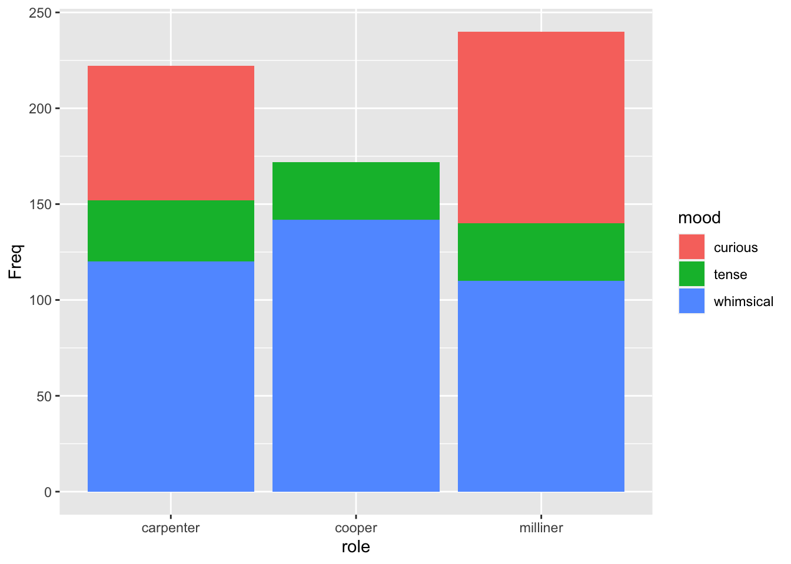

Topic 9 \(\chi ^2\) tests and linear models
- Questions
- How do linear models apply when both the \(x\) and \(y\) are not continuous?
- How can I analyse counts of stuff?
- Objectives
- Appreciate that the linear model idea does not translate intuitively to this data
- Learn how to do a \(\chi^2\) test for a given number of variables
- Keypoints
- Linear models applied in the place of \(\chi^2\) tests are fiddly and in practice we are better off using the hypothesis tests
In the last chapter we looked at discrete data that was ordered and got around it, as hypothesis tests do, by working on ranked data with a linear model. In this section we’ll look at discrete data that isn’t ordered, or is nominal, things like agree, disagree, don't know, or yellow, green, wrinkled, smooth. We’ll also look at discrete data in the form of counts or frequencies.
9.1 The problem with unordered response data
If we have unordered categoric response data (\(y\)-axis) we find ourselves in a bit of a pickle if we want to use try and apply a linear model to understand relationships, because there are no numbers at all. In every other example we’ve looked at the \(y\) response data has been numeric or at least coercible into numbers.
We’ll put ourselves in the shoes of Gregor Mendel and work through his monohybrid cross experiment on flower colour. Mendel’s first step would have been to work out the flower colours after a cross with different coloured true breeding parents, leaving him with a raw dataframe like this:
## # A tibble: 600 x 2
## cross result
## <chr> <chr>
## 1 PP P
## 2 WP P
## 3 WW W
## 4 PW P
## 5 PP P
## 6 PP P
## 7 WP P
## 8 WP P
## 9 PP P
## 10 PP P
## # … with 590 more rowsWhich isn’t very helpful at this stage, how on earth do we get two columns of text into a linear model? Perservering, Mendel would’ve gone on to count the numbers of each colour.
## # A tibble: 2 x 2
## colour count
## <chr> <int>
## 1 P 458
## 2 W 142Mendel famously went on to calculate the ratios, or relative frequencies of each.
## # A tibble: 1 x 6
## P W ratio_p ratio_w freq_p freq_w
## <int> <int> <dbl> <dbl> <dbl> <dbl>
## 1 451 149 3.03 1 0.752 0.248But that doesn’t get us any nearer. The problem is that we have just got count (or frequency) data and nothing else. It seems that it isn’t far from the ordered data case, we can imagine plotting the data as we did with HR score, but the response variable is colour and there’s no clear explanatory (\(x\)) variable, so what would go on that axis? If we had more categories we could get something but there isn’t an order so we can’t meaningfully apply the rank to create a proxy for order. We can’t look at slopes again because there’s no sense in the order of the response variable. In short it’s a mess.
9.2 We have to compare models, not groups.
It is possible to do this sort of comparison with linear models, but it gets to be fiddly and involved because we need to apply a mathematical transformation to our counts and to work on the likelihood ratio of the response to stick to some assumptions of the modelling process.
Briefly we go from this linear model, with interaction terms
y ~ a + b + c + a:bTo two models with logs all over them, one with interaction terms, one without
log(yi) ~ log(N) + log(ai) + log(bi) + log(ci) + log(aibi)
log(yi) ~ log(N) + log(ai) + log(bi) + log(ci)And then we have to compare the models to see which fit the data best.
Which is more complicated than we want to get into and ultimately the process is not worth it in most cases, because there are alternatives. Pragmatically, the answer is to use the \(\chi^2\) and related tests in this case.
It is worthwhile to remember that to analyse unordered categoric response data we need to compare models, because that means assessing which model ‘fit’ the data we have best. This is a useful way to think about what the tests like the \(\chi^2\) and Fisher’s Exact test are doing. They compare the observed counts - being considered one full set of data (or one model), against the expected counts from some ideal or some category split, a second model.
The log-linear model and the tests give closely equivalent results in most cases.
9.3 The \(\chi^2\) test
In the \(\chi^2\) test we ask ‘does one set of counts differ from another?’. This might be a hypothetical ‘expected’ set of counts for the response of interest compared to some standard.
For example, in genetics data we might ask whether the observed ratio of phenotypes matches an expected 9:3:3:1. More generally, we might ask whether the counts in one subset of categories matches another, so in a survey to ask whether respondents agree that broccoli is a nice food, with response ‘agree, disagree, don’t know’, we might compare responses between adults and children.
The basic calculation in the \(\chi^2\) test is the difference between observed and expected numbers in each category subset. In Mendel’s data this would be the difference between the observed number of “P” and “W”, from the expected number - given we did 600 plants, then for a \(3:1\) we’d expect 450 “P” and 150 “W”. This difference is then compared to values of the \(\chi^2\) distribution and returns a \(p\)-value that represents how far away from the mean the difference is. If it is an extreme value (in the tails) the \(p\)-value is lower.
The hypotheses are set as follows:
- \(H_{0}\) the observed counts show no evidence that they are different from the expected counts
- \(H_{1}\) the observed counts would not occur often by chance
9.3.1 Performing the test
To do the test for the simplest case - Mendel’s flower data, we need to get a dataframe with the observed counts on one row and the expected counts on another.
observed_counts <- its_mendel_count_data_time() %>%
tidyr::pivot_wider(names_from = c("colour"), values_from = c("count") )
observed_counts## # A tibble: 1 x 2
## P W
## <int> <int>
## 1 452 148We then need to make the equivalent row for the expected counts - recall we had 600 plants, so calculate the expected number of “P” and “W”
## # A tibble: 1 x 2
## P W
## <dbl> <dbl>
## 1 450 150We then need to stick those rows together
chi_sq_input <- dplyr::bind_rows(observed_counts, expected_counts)
rownames(chi_sq_input) <- c("observed", "expected")## Warning: Setting row names on a tibble is deprecated.## # A tibble: 2 x 2
## P W
## * <dbl> <dbl>
## 1 452 148
## 2 450 150Finally we can do the test with the function chisq.test()
##
## Pearson's Chi-squared test with Yates' continuity correction
##
## data: chi_sq_input
## X-squared = 0.0044644, df = 1, p-value = 0.9467The test shows us that the \(p\)-value of the \(\chi^2\) test is greater than 0.05 so we conclude that there is no evidence that the observed number of each flower colour differs from the expected and that we do indeed have a \(3:1\) ratio. Note that the test automatically does the necessary correction for small sample sizes if the data need it.
9.3.2 More than one variable
The data we had above only had one variable, flower colour. What if we have multiple categoric variables to compare? Largely, the process is the same but making the table is more difficult.
Consider this data frame of voting intentions between generations
## generation alignment count
## 1 boomer fascist 279
## 2 millenial fascist 165
## 3 boomer instagram 74
## 4 millenial instagram 47
## 5 boomer marxist 225
## 6 millenial marxist 191This time we have two variables, with two or three levels of each. To make the contingency table for chisq.test() we can use xtabs() which takes an R formula as a description of how to make the table. Luckily, these are exactly the same formula we used to make linear models.
## alignment
## generation fascist instagram marxist
## boomer 279 74 225
## millenial 165 47 191Here we make a formula that says count is the output variable, and . are the independent or row and column variables (. in formula like this just means everything else). The table comes out as we expect and we can go on to do the chisq.test() as before on the new table.
##
## Pearson's Chi-squared test
##
## data: tabulated
## X-squared = 7.0811, df = 2, p-value = 0.029Here the \(p\) value tells us that the pattern of voting intention is significant, but the numbers are hard to interpret … do millenials vote less for instagram than boomers? We can make things easier to interpret if we have a proportion table. The function prop.table() can make one of those.
## alignment
## generation fascist instagram marxist
## boomer 0.4826990 0.1280277 0.3892734
## millenial 0.4094293 0.1166253 0.4739454The margin option takes a 1 if we want proportions across the rows, 2 if we want proportions down the columns. We can see that the difference between the two generations comes largely from a swing from fascist to marxist.
9.3.3 More than one pairwise comparison
If we have more than two levels in our comparison category (that is, a larger contingency table than 2 x 2), we run into a problem. Look at these data
## role
## mood carpenter cooper milliner
## curious 70 0 100
## tense 32 30 30
## whimsical 120 142 110we have data on the reported mood of people in different jobs. Note that there are three levels of each of the categoric variables. We can make the table and can go straight to the \(\chi^2\) test.
## role
## mood carpenter cooper milliner
## curious 70 0 100
## tense 32 30 30
## whimsical 120 142 110##
## Pearson's Chi-squared test
##
## data: tab
## X-squared = 93.67, df = 4, p-value < 2.2e-16Umm, it’s significant. But weren’t we expecting to see significances between groups? As with the ANOVA it’s done the overall result. We need to do a post-hoc operation to do the full set of pairwise comparisons. The package rcompanion has a nice function for this, pairwiseNominalIndependence(), we set the option method to decide which correction for multiple comparisons to do, fdr is a good choice.
## Comparison p.Fisher p.adj.Fisher p.Gtest p.adj.Gtest p.Chisq
## 1 curious : tense 8.97e-16 1.35e-15 2.22e-16 3.33e-16 1.07e-14
## 2 curious : whimsical 8.98e-29 2.69e-28 0.00e+00 0.00e+00 5.47e-21
## 3 tense : whimsical 5.98e-01 5.98e-01 6.07e-01 6.07e-01 6.11e-01
## p.adj.Chisq
## 1 1.60e-14
## 2 1.64e-20
## 3 6.11e-01Better. But not quite! The groups compared are the different moods, presumably we wanted to look at the differences between the different roles. The table is in the wrong orientation in that case.
We can explicitly state the orientation of the table by manipulating the formula in xtabs(). Compare the results of these two calls
## mood
## role curious tense whimsical
## carpenter 70 32 120
## cooper 0 30 142
## milliner 100 30 110## role
## mood carpenter cooper milliner
## curious 70 0 100
## tense 32 30 30
## whimsical 120 142 110We usually want the form with the variable we’re comparing in the rows, that’s the Freq ~ role + mood. We can then do the pairwise \(\chi^2\).
## Comparison p.Fisher p.adj.Fisher p.Gtest p.adj.Gtest p.Chisq
## 1 carpenter : cooper 5.26e-20 7.89e-20 0.0000 0.0000 3.38e-15
## 2 carpenter : milliner 7.81e-02 7.81e-02 0.0773 0.0773 7.81e-02
## 3 cooper : milliner 1.66e-28 4.98e-28 0.0000 0.0000 1.89e-21
## p.adj.Chisq
## 1 5.07e-15
## 2 7.81e-02
## 3 5.67e-21And we can now clearly see the \(p\)-values across all the group comparisons. The default output is actually from a range of \(\chi^2\) related tests. In this case always take the p.adj value as the final \(p\)-value.
9.4 Summary
We’ve finally seen a situation where the linear model paradigm for thinking about statistical tests and hypothesis let’s us down, the categorical \(x\) and \(y\) axis gets just a bit too complicated for the lines idea to remain intuitive, so here we must abandon it. But the alternative hypothesis tests in the \(\chi^2\) family are still available and we’ve learned some useful and general ways to apply those.
9.5 Plot ideas for categoric and count data
In previous chapters we’ve seen how to plot the data we’ve been working on and usually the sort of plot we want has been quite obvious. With the unordered categoric only data we have here, it isn’t so obvious. Often just the table will do! But if you would like some plots here are some rough examples to build from.
9.5.1 Balloon plot

This plot shows circles whose size is proportional to the count at each combination.
9.5.2 Heatmap

This plot shows tiles whose filled colour represents the count at each combination
9.5.3 Stacked bar

- Questions
- How do I know whether my model is any good?
- How can I use the model to make predictions?
- What can I use when linear models don’t work well?
- Objectives
- Learn how to tell whether the data you have are suitable for linear models
- Learn how to make predictions from a model
- Keypoints
- Data should be normally distributed, but linear models are quite robust to deviation from this
- Models can be used to make new hypotheses
- Linear models are one member of a larger family of models for many types of data